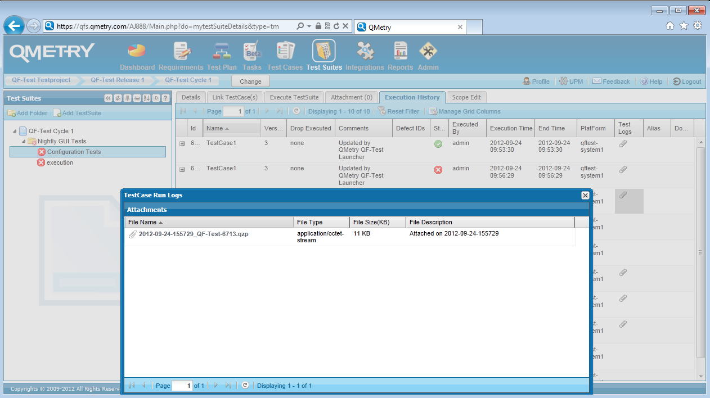

| Version 6.0.3 |
Die aktuelle Integration zwischen QF-Test und QMetry beinhaltet die Unterstützung der Planung von Testfällen bzw. Testschritten innerhalb von QMetry und anschließend die Weiterleitung der Ausführungsinformationen an QF-Test. Nachdem QF-Test die Tests ausgeführt hat, werden das Protokoll und der HTML Report in den Testergebnisbereich von QMetry hochgeladen sowie der Status des Testfalles auf das entsprechende Ergebnis gesetzt.
Für die Testausführung müssen Sie Ihr Testsystem wie folgt vorbereiten:
QMetryAgent.properties die
benötigten Umgebungsvariablen für den QF-Test Wrapper von QMetry.QMetryConfig.properties den
korrekten und vollständigen Pfad zur QF-Test Ausführungsdatei.QMetryConfig.properties
ggf. erwünschte Ausführungsparameter, siehe auch nächsten Abschnitt.Nachdem Sie den QMetry Agenten und Launcher konfiguriert haben, müssen Sie die Testausführung planen. Für die Testausführung von QF-Test Testfällen gibt es mehrere Varianten in QMetry. Sämtliche Varianten sind im QMetry IntegrationGuide für QF-Test beschrieben. Für die schnellste Variante gehen Sie wie folgt vor:
Nun können Sie die Testfälle ausführen:
Die unten stehende Abbildung zeigt den 'Execution History' Reiter in der 'Test Suites' Ansicht inkl. QF-Test Protokoll:
|
|  | ||
|
| Abbildung 25.14: QF-Test Protokoll in QMetry | ||
Sie finden detaillierte Informationen sowie weitere Varianten für die QF-Test Integration im Handbuch und IntegrationGuide Dokument von QMetry.
Für eine einfache Integration empfehlen sich folgende Einstellungen
in der Datei QMetryConfig.properties:
generic.adapter.success.code auf
0,1.qftest.additional.arguments auf
-test ${QMTestCaseName} im Falle einer lokalen
Ausführung.
qftest.additional.arguments auf
-test ${QMTestCaseName} -calldaemon -daemonhost
<Ihr-Testrechner> -daemonport <Ihr-DaemonPort>
.Wie bereits im vorigen Kapitel erwähnt, muss bei dieser Integrationsvariante der Name des Testfalles in QMetry den Wert des 'QF-Test ID' Attributes des Testfall Knotens in QF-Test entsprechen.
Weitere Varianten der Integration zwischen QMetry und QF-Test finden Sie im Integrationguide Dokument von QMetry.
| Letzte Änderung: 6.9.2022 Copyright © 1999-2022 Quality First Software GmbH |